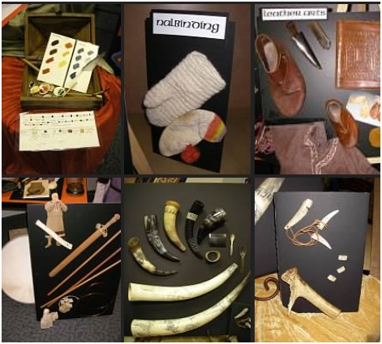

A&S 50 Challenge
The 50 Year Challenge is about making 50 of something.
It could be 50 of a new art, 50 of a complex item, or 50 different items in a single theme.
Some are concentrating on breath of work in a particular era or place, others are concentrating on depth in a particular field such as metal work or weaving.
Whatever you decide to do, it is about challenging yourself to learn and do more.
Below are some pictures and links to some of the current 50 year challenge participants.
If you would like to be featured, tell us what your challenge is, and give us a link to where we can send people for more pictures, and we will post it here.
Contact ArtsandSciences@sca50year.org.
An Embroidered history of the SCA

Lady Judwiga Vladescu decided to take on the ambitious project of recording the history of the SCA in embroidery. It is on track to be finished for the 50 Year Celebration, and will be displayed there. Follow this project on it's home page, complete with events that will be embroidered in future panels at: Bayeux Tapestry
50 New Pattern/Items
Tiarna Brann mac Finnchad from the West has decided to take on a material culture challenge of 50 different.....things.
This includes 50 different patterns or items.
These are to be period items that could have been used.
Some items already in progress are working replicas of coats, hoods, hats, documentation and tools.
Take a look at the complete list at: Tiarna's 50 for 50.
50 German Renaissance Artifacts
Genoveva von Lübeck has taken on the project of making 50 German Renaissance Artifacts such as textiles and objects that would have been used by her persona by May 1, 2015.
Take a look at her progress here Genoveva's 50.
7 times 50 Year Challenge

Cathryn of Chester from the Midrealm has taken on a HUGE challenge.
Her intent is to do the 50 Year Challenge, not once, but seven times over.
She has pledged to do 50 hand made kits, 50 scrolls, 50 needle work projects, 50 10th Century studies, teach 50 classes, 50 separate A&S promotional activities and 50 Research projects! Wow! We are not sure if she plans to sleep, but you can follow her progress at: 7 times the 50 Challenge.
50 Poems
THL Colyne Stewart, of Ealdormere is taking up the Challenge with 50 poems about the event itself! Good luck! There is plenty of material to write about! Read about them here:: 50 Poems.
What are YOU working on?